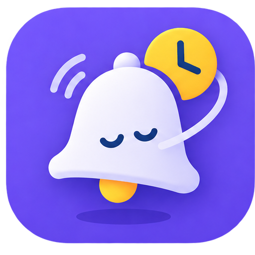

Capture
As notificações entram numa fila, sem interromper o que importa agora.

Notify LaterO Notify Later segura as notificações e entrega cada uma quando você decidir. Um app calmo, privado e feito para ficar no seu dispositivo.
As notificações entram numa fila, sem interromper o que importa agora.
Defina um atraso global ou um tempo diferente para cada aplicativo.
Receba tudo no momento certo, com clareza e sem ansiedade.
Você decide por quanto tempo cada notificação espera. Comece com um intervalo global e personalize aplicativos quando quiser.
Você tem uma nova mensagem
Conteúdo guardado até o momento certo.A notificação fica guardada no aparelho e volta quando o tempo terminar.
Sem conta. Sem servidor. Sem anúncios e sem analytics. O Notify Later funciona localmente no Android para que suas notificações nunca precisem sair do seu aparelho.
Conheça os princípios de privacidade